Inverse modeling and the RElab ecosystem
Pablo Almaraz, RElab
Source:vignettes/articles/inverse-modeling.Rmd
inverse-modeling.RmdThis article covers the estimation workflow: turning a model and a dataset into an objective over parameters, solving it with the symplectic families, and wiring the result into the wider RElab ecosystem.
From model plus data to an objective
sym_inverse() normalizes estimation problems into the
package’s objective currency. The function form takes any prediction
function of the parameter vector; the system_spec form
takes a janos dynamical system and fits it by trajectory matching: the
system is integrated at the candidate parameters, the simulated states
are interpolated at the observation times, and the loss (weighted least
squares, Gaussian negative log-likelihood, or a custom functional) is
applied to the observed columns. The parameter box uses the
list(lo, hi) convention shared with the stiff inverse
subsystem of RElabverse, and its names select the parameters to estimate
and label the fit output.
library(symplectoR)
## Nonlinear regression: agreement with nls to 3.7e-9 in the shipped test
set.seed(10)
t_obs <- seq(0, 5, by = 0.25)
y_obs <- 3 * exp(-0.7 * t_obs) + rnorm(length(t_obs), sd = 0.01)
obj <- sym_inverse(function(theta) theta[1] * exp(-theta[2] * t_obs), data = y_obs,
theta_bounds = list(lo = c(a = 0.1, b = 0.01), hi = c(a = 10, b = 5)))
fit <- sym_optim(obj, x0 = c(1, 1), method = "slc_expo")
summary(fit)
#> ¡ symplectoR fit (slc_expo)
#> ⚙ Objective: inverse model (dimension 2)
#> ✔ Best value: 0.00117156 after 111 iterations
#> ✔ Status: Converged
#> ¡ Evaluations: 561 objective, 112 gradient
#> ⏱ Wall time: 0.002 s
#>
#> Incumbent coordinates:
#> ✔ a = 2.99491
#> ✔ b = 0.699988
#> ✔ Final gradient norm: 9.08e-09
#> ¡ Objective drop over the last 10 recorded iterates: 2.32e-16
#> ⚙ Momentum restarts: 29; temporal loop events: 4The first thing to look at is never the parameter vector but the fit
itself, together with its residuals: a small loss with structured
residuals means the model is wrong in a way the loss cannot see.
Objectives built by sym_inverse() remember the observations
and the prediction map, so every fit of one plots against its own data
without the dataset having to be carried alongside.
plot(fit, type = "observed")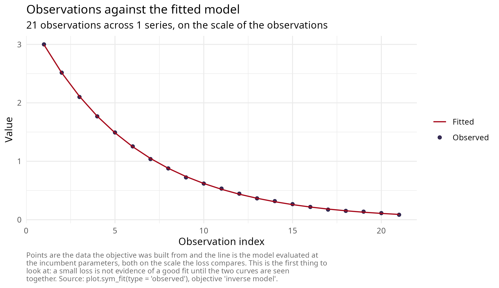
plot(fit, type = "residuals")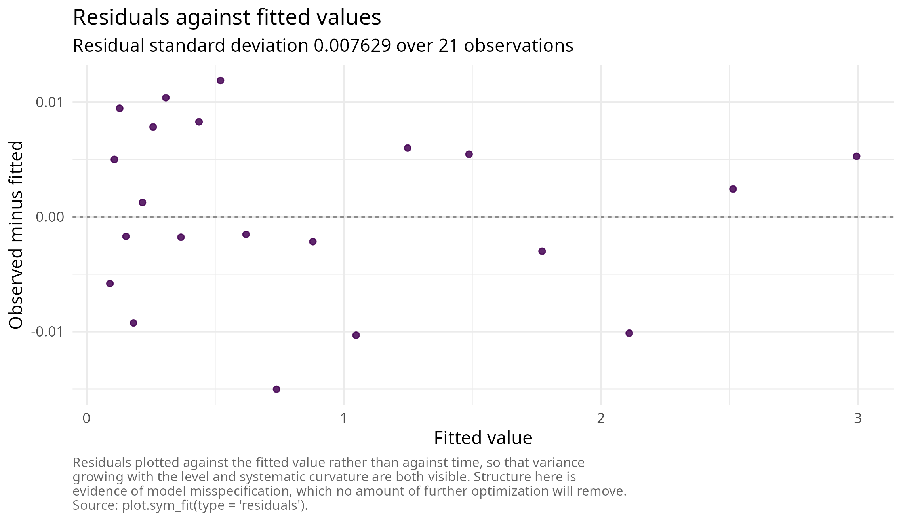
Trajectory matching through janos
sp <- janos::system_spec(
rhs = function(t, y, p) c(p$r * y[1] * (1 - y[1] / p$K)),
state_names = "N", parms = list(r = 0.5, K = 10), init = c(N = 0.1)
)
sim <- janos::dyn_sim(sp, t_max = 20, parms = list(r = 0.5, K = 10),
discard_transient = 0, verbose = FALSE)
set.seed(2)
idx <- seq(1, nrow(sim$trajectory), by = 5)
observed_df <- data.frame(time = sim$trajectory$time[idx],
N = sim$trajectory$N[idx] + rnorm(length(idx), sd = 0.05))
obj2 <- sym_inverse(sp, data = observed_df,
theta_bounds = list(lo = c(r = 0.05, K = 2), hi = c(r = 2, K = 30)))Two practical realities of simulation-based objectives deserve
stating plainly. First, gradients come from central finite differences,
so one gradient costs 2 d integrations of the system;
budgets must be set with that multiplier in mind, and the restarted
Bregman methods, which converge in hundreds rather than tens of
thousands of iterations on well-scaled problems, are the economical
local engines. Second, likelihood surfaces of dynamical models are
routinely ill conditioned when parameters live on very different scales
(in the shipped logistic example the Hessian eigenvalues at the optimum
are 11970 and 21); bounds should be chosen so that parameter ranges are
comparable, or the problem reparameterized accordingly.
The validated two-stage pipeline handles multimodality and
conditioning together: a quantum global scan over the box (immune to
local minima, resolution-limited), then symplectic refinement from its
incumbent. In the shipped validation the refinement reaches the
noise-floor optimum f = 0.11224 in 185 iterations,
identical to an L-BFGS-B reference to five decimals.
global <- sym_optim(obj2, method = "qhd", seed = 1,
control = sym_control("qhd", N_grid = 64, K = 800))
refined <- sym_optim(obj2, x0 = global$x_best, method = "slc_expo",
control = sym_control("slc_expo", C = 0.1, h = 2, max_iter = 1200, tol_grad = 1e-5))
summary(refined)
#> ¡ symplectoR fit (slc_expo)
#> ⚙ Objective: trajectory matching (dimension 2)
#> ✔ Best value: 0.112241 after 189 iterations
#> ✔ Status: Converged
#> ¡ Evaluations: 951 objective, 190 gradient
#> ⏱ Wall time: 12.751 s
#>
#> Incumbent coordinates:
#> ✔ r = 0.501446
#> ✔ K = 9.97868
#> ⚠ Final gradient norm: 8.15e-06
#> ¡ Objective drop over the last 10 recorded iterates: 1.22e-11
#> ⚙ Momentum restarts: 47; temporal loop events: 6Because the objective built by sym_inverse() is an
ordinary sym_objective, it plots like any other: the
two-parameter likelihood surface can be drawn directly, and both stages
of the pipeline can be marked on it. This is the clearest possible
picture of what each stage contributes.
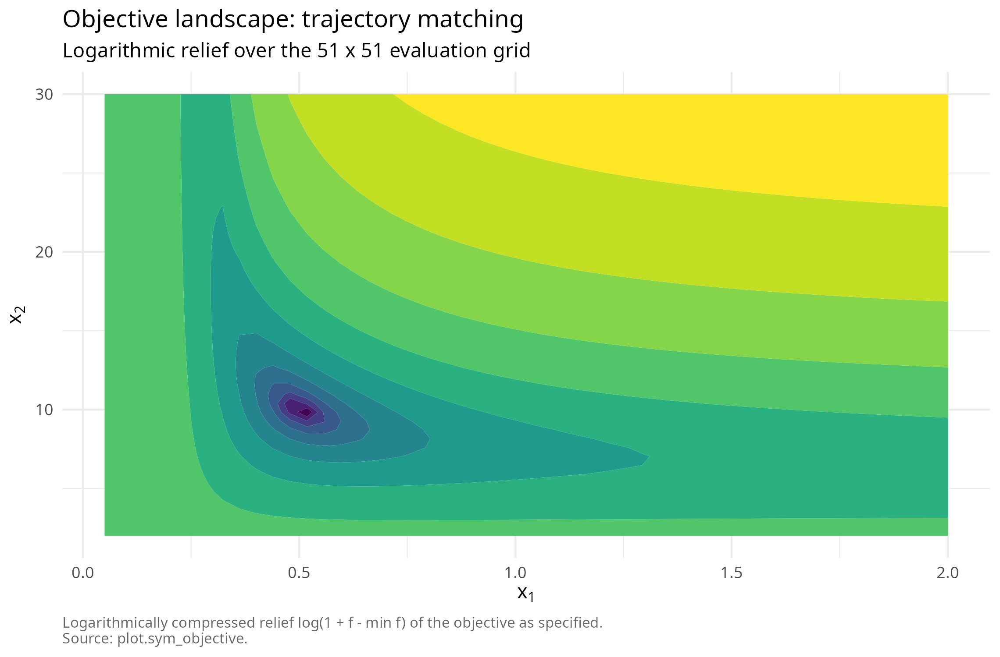
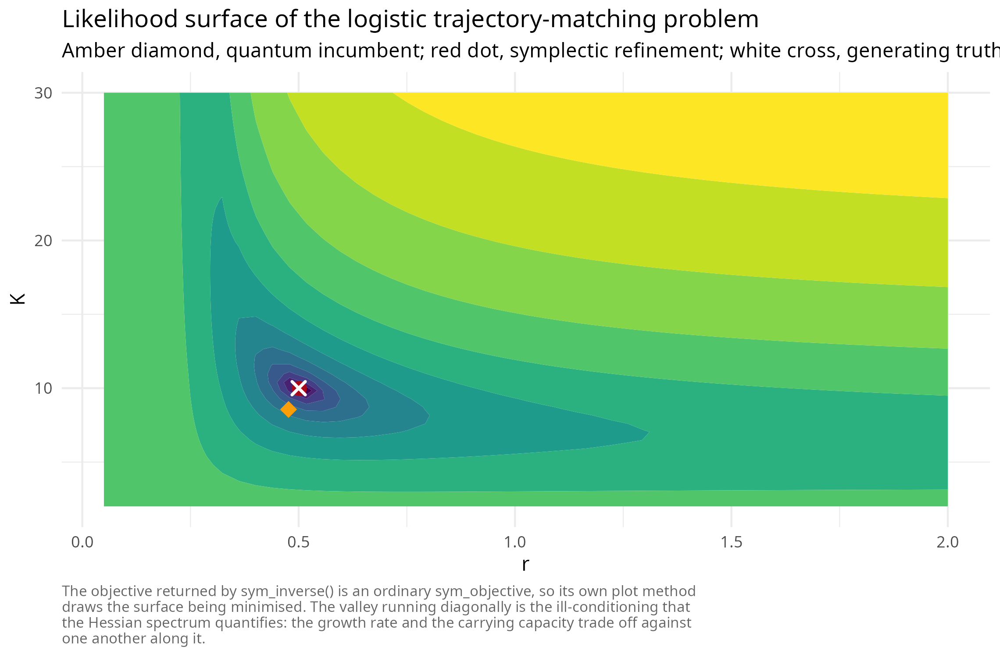
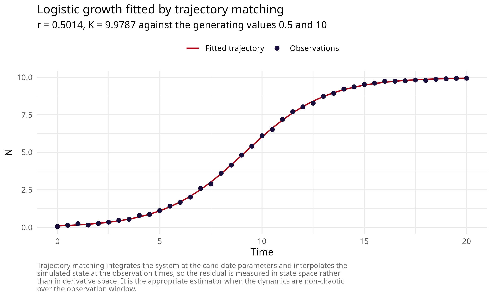
Empirical trajectory matching: two models on one microcosm
The shipped paramecium_didinium record is a controlled
predator-prey microcosm sampled roughly every twelve hours over
thirty-five days, the cleanest data of its kind. It is the natural test
of the system_spec route on real observations, and of the
package’s solvers on a likelihood surface that was not constructed to be
well behaved.
Two decisions matter before any solver is called. First, estimate on the logarithmic scale: rate and capacity parameters differ by orders of magnitude, and the resulting curvature spread is a property of the coordinates rather than of the data. Second, use a logarithmic-scale loss, so that the two species contribute comparably rather than the more abundant one dominating the residual.
log_loss <- function(pred, data) sum((log(pred + 1) - log(data + 1))^2)
d <- paramecium_didinium
init <- c(paramecium = d$paramecium[1], didinium = d$didinium[1])
lv <- janos::system_spec(
rhs = list(paramecium ~ exp(lr) * paramecium - exp(la) * paramecium * didinium,
didinium ~ exp(lb) * exp(la) * paramecium * didinium - exp(lm) * didinium),
state_names = c("paramecium", "didinium"),
parms = list(lr = 0, la = -4, lb = -0.7, lm = 0), init = init)
rm_spec <- janos::system_spec(
rhs = list(
paramecium ~ exp(lr) * paramecium * (1 - paramecium / exp(lK)) -
exp(la) * paramecium * didinium / (1 + exp(la) * exp(lh) * paramecium),
didinium ~ exp(le) * exp(la) * paramecium * didinium / (1 + exp(la) * exp(lh) * paramecium) -
exp(lm) * didinium),
state_names = c("paramecium", "didinium"),
parms = list(lr = 0, lK = 6, la = -4, lh = -3, le = -0.7, lm = 0), init = init)
obj_lv <- sym_inverse(lv, data = d, loss = "custom", loss_fn = log_loss,
theta_bounds = list(lo = c(lr = -3, la = -9, lb = -5, lm = -3),
hi = c(lr = 3, la = 0, lb = 2, lm = 3)))
obj_rm <- sym_inverse(rm_spec, data = d, loss = "custom", loss_fn = log_loss,
theta_bounds = list(
lo = c(lr = -3, lK = log(100), la = -9, lh = -9, le = -5, lm = -3),
hi = c(lr = 3, lK = log(3000), la = 0, lh = 0, le = 2, lm = 3)))Lotka-Volterra has a neutrally stable centre and no prey self-limitation; Rosenzweig-MacArthur adds both a carrying capacity and a saturating functional response. Fitting each and comparing the attained loss is a small model-selection exercise, and the solvers make it cheap.
fit_lv <- sym_optim(obj_lv, x0 = c(lr = 0, la = -4, lb = -0.7, lm = 0), method = "slc_expo",
control = sym_control("slc_expo", C = 0.1, h = 1, max_iter = 800, tol_grad = 1e-5))
fit_rm <- sym_optim(obj_rm, x0 = c(lr = 0, lK = 6, la = -4, lh = -3, le = -0.7, lm = 0),
method = "slc_expo",
control = sym_control("slc_expo", C = 0.1, h = 1, max_iter = 800, tol_grad = 1e-5))| Model | Parameters | Log-scale loss |
|---|---|---|
| Lotka-Volterra | 4 | 335.262 |
| Rosenzweig-MacArthur | 6 | 45.781 |
The richer model attains the lower loss, as it must, having strictly more parameters. What the fit adds is where the improvement comes from, which can be read off by disabling each structural addition at the fitted optimum and re-evaluating the same loss: sending the carrying capacity to its ceiling removes prey self-limitation, and sending the handling time to its floor collapses the saturating response to a linear one.
| Variant | Log-scale loss |
|---|---|
| Fitted Rosenzweig-MacArthur | 45.78 |
| Handling time at its floor (linear functional response) | 131.70 |
| Carrying capacity at its ceiling (no prey self-limitation) | 2027.79 |
Both additions are supported by these data, and by a wide margin; neither parameter sits on a bound at the optimum, so neither is merely absorbing a boundary effect.
The comparison against a quasi-Newton solver is worth running rather than asserting, because on these surfaces neither approach dominates. The chunk below runs L-BFGS-B on the identical objectives from the identical starts.
| Model | slc_expo | L-BFGS-B |
|---|---|---|
| Lotka-Volterra | 335.262 | 312.031 |
| Rosenzweig-MacArthur | 45.781 | 51.067 |
The outcome is basin dependent in both directions, and that is the honest lesson of a multimodal surface. On the four-parameter model the line-search method finds the better basin; on the six-parameter model the symplectic trajectory does, and in a controlled experiment on that objective, L-BFGS-B recovered the better basin in only 1 of 38 uniformly random restarts within the same box. Structure preservation does not improve the asymptotic rate; the larger admissible step lets the trajectory cross barriers that a line-search method treats as walls, which changes which minimum is found rather than how fast it is approached. Where the surface is genuinely multimodal, neither solver replaces a global stage.
The "observed" view facets automatically over the
observed state variables, so a two-species trajectory-matching fit shows
both series against the fitted model on the scale the loss compares.
Simulating the fitted systems on a dense grid adds what that view cannot
show, namely the behaviour between observations. The classical model
cannot damp its own oscillation and drifts out of phase; the richer
model tracks both the amplitude decay and the phase.
plot(fit_rm, type = "observed")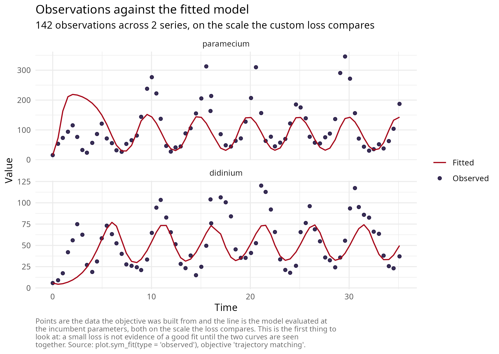
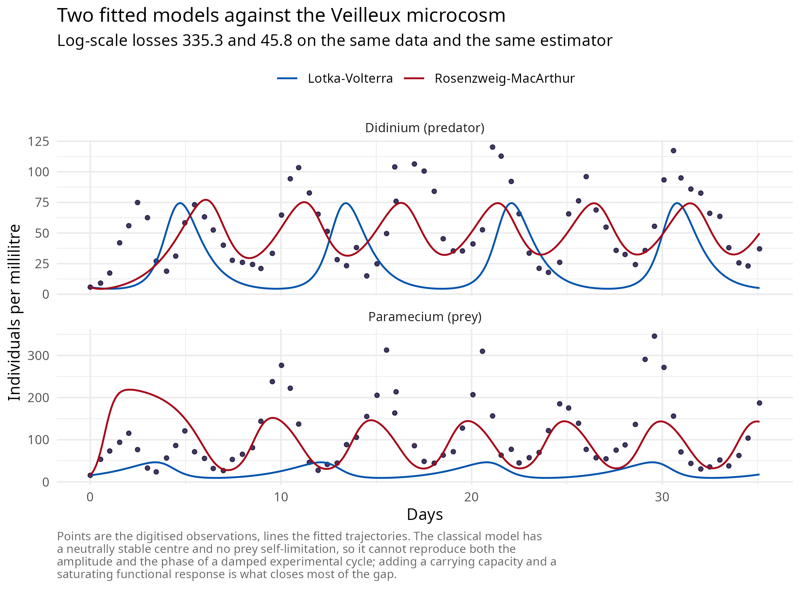
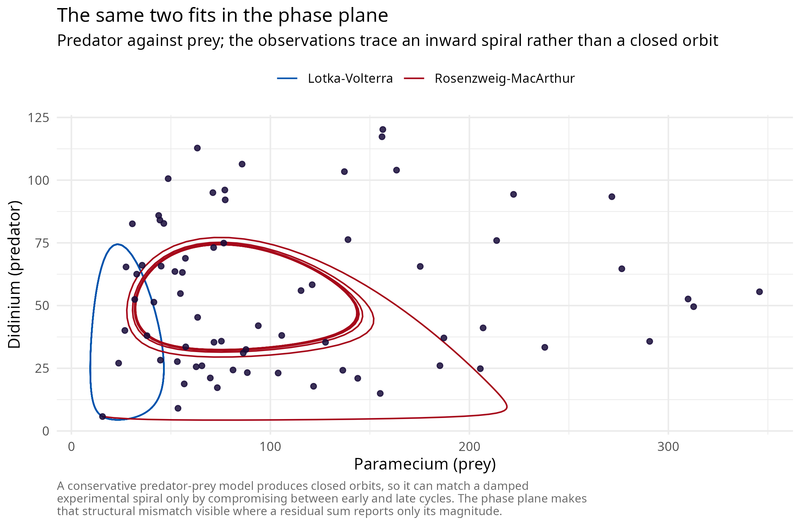
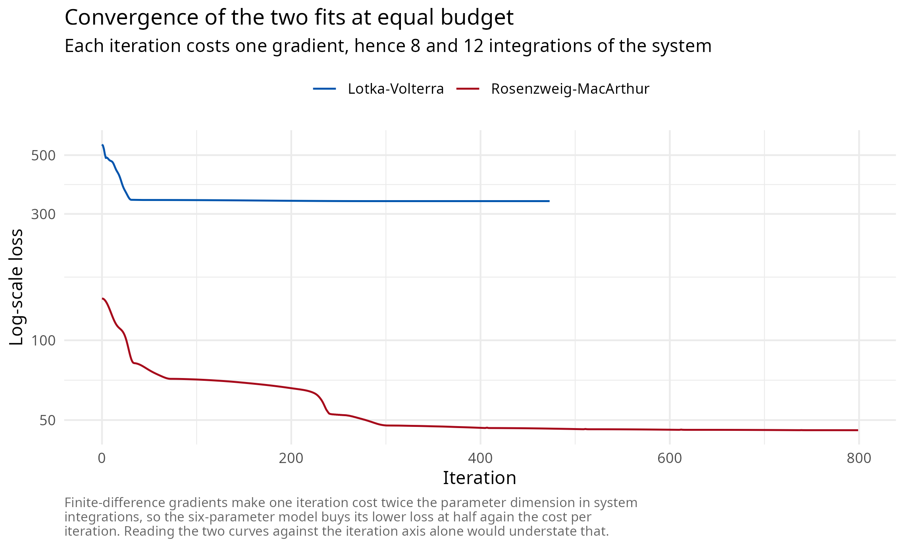
plot(fit_rm, type = "dashboard")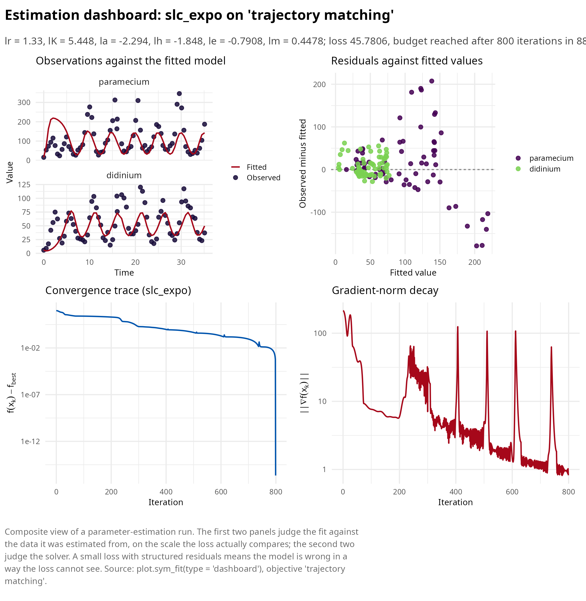
Ecosystem placement
symplectoR occupies the momentum, symplectic and quantum-inspired
niche of the RElab optimization landscape and deliberately duplicates
nothing: the quasi-Newton, conjugate-gradient, trust-region, simplex and
swarm local optimizers live in lucifer’s Laplace approximation engine,
proximal and coordinate-descent machinery lives in RElabverse, and
rigorous interval branch-and-bound global search lives in the stiff
inverse subsystem. The bridge is as_incumbent_solver(),
which adapts any trajectory method here to the optim-style
(par, fn, lower, upper) contract used by multi-start global
loops, so a symplectic method can serve as the local descent stage
inside an existing box search.
solver <- as_incumbent_solver("rgd", sym_control("rgd", eps = 0.05, max_iter = 2000))
res <- solver(par = c(0, 0), fn = function(x) sum((x - 1)^2),
lower = c(-5, -5), upper = c(5, 5))
str(res)
#> List of 3
#> $ par : num [1:2] 1 1
#> $ value : num 3.19e-16
#> $ convergence: int 0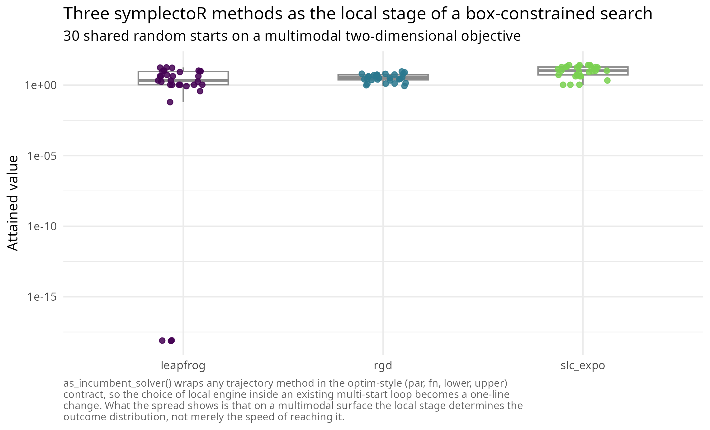
For comparison studies, the natural in-ecosystem baselines are the gradient-family members of lucifer’s optimizer set on the same objective, and lucifer’s Stein variational gradient descent as the density-evolution counterpart of the quantum engine.
References
[1] Ramsay, J. O., Hooker, G., Campbell, D., & Cao, J. (2007). Parameter estimation for differential equations: a generalized smoothing approach. Journal of the Royal Statistical Society: Series B, 69(5), 741-796. https://doi.org/10.1111/j.1467-9868.2007.00610.x